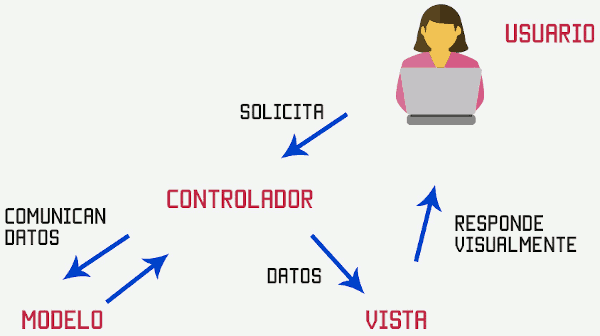
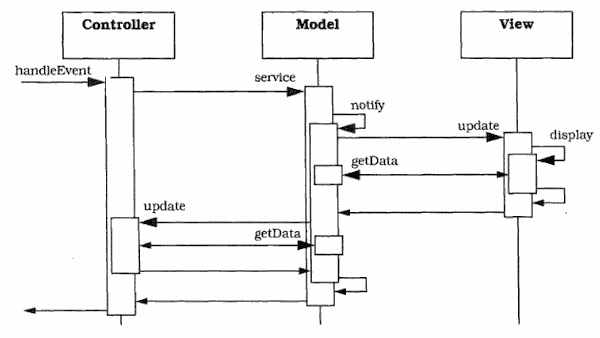
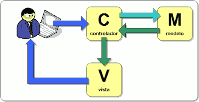

Els arxius que contenen codi font són documents de text pla, per la qual cosa qualsevol editor de text pla pot servir-nos per a escriure un programa.
Però escriure un programa no és només escriure el codi font, sinó que requereix d'altres processos com a compilació/interpretació, depuració, solució d'errors, millora d'eficiència, banc de proves, manteniment, control de versions, etc. Així, hui dia, a nivell professional, ningú programa amb un editor de text pla, sinó que utilitzen diferents eines per a la creació de programari.
Hui dia existeixen multitud d'eines per a l'ajuda a la generació de programari cada dia apareixen noves que ens permeten adaptar-nos a les noves exigències del mercat:
- Git: sistema de control de versions distribuït que permet als desenvolupadors realitzar un seguiment i administrar canvis en el codi font.
- Docker: plataforma de virtualització basada en contenidors que permet als desenvolupadors empaquetar, distribuir i executar aplicacions de manera uniforme i eficient en diferents entorns i plataformes.
- Postman: eina de col·laboració i desenvolupament de API que permet als desenvolupadors dissenyar, provar i documentar API's de manera eficient.
- Jira: eina de seguiment de problemes i gestió de projectes àmpliament utilitzada en la indústria del desenvolupament de programari. Permet als equips de desenvolupament planificar, rastrejar i gestionar projectes de programari de manera eficient.
Les eines bàsiques per a creació de programes podem classificar-les de la manera següent:
Entorns de Desenvolupament Integrats (IDE)
Un IDE (Integrated Development Environment) és una eina que ajudar al programador en la realització d'aplicacions en determinats llenguatges.
Normalment, un IDE consisteix d'un editor de codi font (processador de text per a escriure el codi del programa), eines de construcció automàtiques i un depurador (eina que analitza el codi del programa optimitzant-lo i ajudant a resoldre problemes). La majoria dels IDE tenen autocompletat intel·ligent de codi (IntelliSense), ressaltat de text amb diferents colors, alineació automàtica, navegació en el text del document o del projecte, avís d'errors en escriure, control de versions, automatització de proves, ajudes a la depuració, etc. Alguns IDE contenen un compilador, un intèrpret, o tots dos, com ara NetBeans i Eclipse.
Existeixen IDE's que són específics per a alguns llenguatges de programació mentre que uns altres són genèrics i permeten utilitzar el mateix IDE per a diferents llenguatges afegint mòduls o plugins al IDE.
Alguns IDE's treballen en local, mentre que uns altres poden treballar en el núvol.
Framework
Un framework és un esquema o marc de treball que ofereix una estructura base per a elaborar un projecte amb objectius específics, una espècie de plantilla que serveix com a punt de partida per a l'organització i desenvolupament de programari. En general, amb el terme framework, ens estem referint a una estructura programari composta de components personalitzables i intercanviables per al desenvolupament d'una aplicació.
Utilitzar frameworks pot simplificar (i molt) una tasca o procés, permetent al programador:
- Agilitzar el procés: en treballar sobre una estructura base que sempre és la mateixa i en poder reutilitzar eines o mòduls.
- Guanyar productivitat: en tindre les estructures desenvolupades mancant personalitzar-les, s'aconsegueix obtindre el resultat final en un període menor de temps.
- Afavorir el treball col·laboratiu: en comptar amb una estructura base, el codi final és menys personal i s'adapta més als estàndards. Això permet que diferents membres d'un mateix equip treballen de manera coordinada. A més, afavoreix que es compartisca codi i es reduïsca la corba d'aprenentatge d'altres membres de l'equip.
- Reduir la possibilitat de cometre errors: ja que gran part de l'aplicació ja està programada i certificada. A més, davant qualsevol error o dubte, existeix una comunitat de programadors als quals se'ls pot consultar.
- Crear codi de major qualitat: en crear codi més estàndard i amb majors nivells de control d'errors.
- Facilita el manteniment: en treballar sobre patrons i estructures comunes, resulta més facil el manteniment de les aplicacions.
- Major seguretat: molts frameworks inclouen mesures de seguretat per a protegir l'aplicació contra possibles amenaces.
Existeixen multitud de Frameworks i cada dia apareixen nous. Alguns dels més utilitzats són:
- React: va nàixer en 2013 de la mà de Facebook i s'executa sobre Node.js. Una biblioteca JavaScript per a crear interfícies d'usuari. ReactJS s'utilitza àmpliament per a crear aplicacions web dinàmiques i interactives.
- Angular: framework basat en TypeScript per a construir aplicacions web. Angular és conegut per les seues potents funcions i la seua capacitat per a crear aplicacions complexes amb facilitat.
- Vue.js: framework JavaScript progressiu per a construir interfícies d'usuari.
- Laravel: framework d'aplicacions web PHP. Laravel és conegut per la seua elegant sintaxi, autenticació integrada i migracions de bases de dades.
- Django: framework web de Python per a crear aplicacions web. Django és conegut per la seua interfície d'administració integrada, les seues sòlides funcions de seguretat i la seua compatibilitat amb el desenvolupament ràpid.
- Spring: framework basat en Java per a crear aplicacions empresarials. Spring és conegut pel seu modularidad, la seua compatibilitat amb la seguretat empresarial i el seu potent ecosistema de plugins i extensions.
Patró MVC
Per a comprendre com treballen els frameworks Web existents és imprescindible conéixer el patró MVC (Model-Vista-Controlador).

Per a fer-nos una idea, ho podem comparar amb la televisió. En el teu televisor pots veure diferents continguts distribuïts per diferents companyies (que representen al model), tots els canals que pots veure són la vista, i tu canviant de canal, controlant què veus representes al controlador.
El patró MVC és una guia per al disseny d'arquitectures d'aplicacions que oferisquen una forta interactivitat amb usuaris. Aquest patró organitza l'aplicació en tres models separats, el primer és un model que representa les dades de l'aplicació i les seues regles de negoci, el segon és un conjunt de vistes que representa els formularis d'entrada i eixida d'informació, el tercer és un conjunt de controladors que processa les peticions dels usuaris i controla el flux d'execució del sistema.

L'arquitectura MVC proposa, independentment de les tecnologies o entorns, la separació dels components d'una aplicació en tres grups (o capes) principals: el model, la vista, i el controlador, i descriu com es relacionaran entre ells per a mantindre una estructura organitzada, neta i amb un acoblament mínim entre les diferents capes.
Model
Representació de les dades del domini, és a dir, aquelles entitats que ens serviran per a emmagatzemar informació del sistema que estem desenvolupant. Així mateix, trobarem la lògica de negoci de l'aplicació, és a dir, la implementació de les regles, accions i restriccions que ens permeten gestionar les entitats del domini. Serà per tant el responsable que el sistema es trobe sempre en un estat consistent i íntegre. També s'encarrega de gestionar l'emmagatzematge i recuperació de dades.
El Model conté principalment les entitats que representen el domini, la lògica de negoci, i els mecanismes de persistència del nostre sistema.
Vista
Responsables de generar la interfície de la nostra aplicació, és a dir, de compondre les pantalles, pàgines, o qualsevol tipus de resultat utilitzable per l'usuari o client del sistema. De fet, sol dir-se que la Vista és una representació de l'estat del Model en un moment concret i en el context d'una acció determinada. En el cas de les aplicacions per a la Web, normalment en la Vista es trobaran els components capaços de generar el llenguatge de marques de la pàgina que serà enviada a l'usuari.
En la Vista trobarem els components responsables de generar la interfície amb l'exterior, per regla general, encara que no exclusivament, el UI de la nostra aplicació.
Controlador
Actuar com a intermediaris entre l'usuari i el sistema. Seran capaços de capturar les accions d'aquest sobre la Vista, com pot ser la pulsació d'un botó o la selecció d'una opció de menú, interpretar-les i actuar en funció d'elles. Per exemple, retornant a l'usuari una nova vista que represente l'estat actual del sistema, o invocant a accions definides en el Model per a consultar o actualitzar informació.
També farà tasques de transformació de dades per a fer que els components de la Vista i el Model s'entenguen. Així, traduiran la informació enviada des de la interfície, per exemple els valors de camps d'un formulari rebuts mitjançant el protocol HTTP, a objectes que puguen ser compresos pel Model, com poden les classes o les entitats del domini.
Podem considerar el Controlador com un coordinador general del sistema, que regula la navegació i el flux d'informació amb l'usuari, exercint també com a intermediari entre la capa de Vista i el Model.
En el Controlador es troben els components capaços de processar les interaccions de l'usuari, consultar o actualitzar el Model, i seleccionar les Vistes apropiades a cada moment.
Relació entre Model, Vista i Controlador
Nota: existeixen diferents variants del patró MVC. Ací estem considerant la utilitzada més sovint pels desenvolupadors, encara que existeix també la possibilitat que la Vista contacte directament amb el Model, normalment per a obtindre informació.

Les accions i informació procedents de l'usuari seran recollides exclusivament pels Controladors. Cap component d'una altra capa ha d'accedir a les dades generades des del client, de la mateixa forma que només els components de la Vista estaran autoritzats a generar interfícies d'usuari amb les quals enviar informació de retorn.
El Controlador. Té accés bidireccional al Model, és a dir, serà capaç tant d'actualitzar el seu estat, invocant per exemple mètodes o accions inclosos en la seua lògica de negoci, com de consultar la informació que siga necessària per a completar les seues tasques.
D'altra banda, el Controlador és l'encarregat de seleccionar la Vista més apropiada en funció de l'acció duta a terme per l'usuari, subministrant-li tota la informació que necessite per a compondre la interfície.
La responsabilitat de la Vista, per tant, es redueix a generar la interfície partint de les dades que li subministre el controlador.